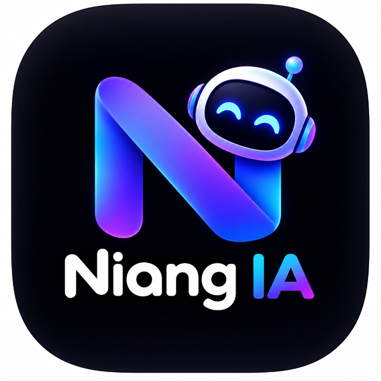

Parlez naturellement
Discutez à la voix ou au clavier et choisissez une voix parmi celles disponibles.
Assistant vocal pour Windows
NIANG IA est un assistant de bureau qui vous écoute, vous répond naturellement et vous aide à accomplir des tâches sur votre PC Windows, avec des confirmations pour les actions sensibles.
Windows 10/11 · Une clé API Gemini est nécessaire pour les fonctions IA. Consultez les instructions avant l’installation.

Discutez à la voix ou au clavier et choisissez une voix parmi celles disponibles.
Importez des fichiers compatibles pour en extraire le contenu et demander une analyse.
Les actions sur l’ordinateur sont soumises aux protections et confirmations de l’application.